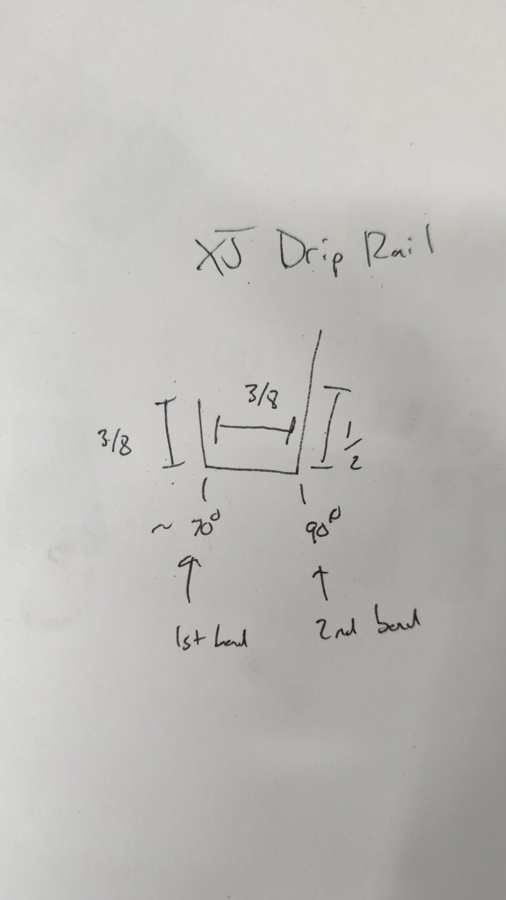

Rust Repair Part 12: Welding in the New Passenger Drip Rail
My new metal brake finally arrived.
Before settling on the Woodward Fab Boss 16, I spent several hours researching metal brakes and looked at a ton of different models across various manufacturers such as Baileigh, Tennsmith, Grizzly, JET, Eastwood, and Enco.
I picked the Boss 16 because I primarily do 16ga or thinner metal work, and also wanted something that was 48" long so I could bend the roof patch panel in one piece. If you want to get pedantic it can actually bend up to 48.25" which was perfect because the patch I needed to make was actually a hair over 48" long.
I haven’t needed to bend anything yet that takes advantage of the fingers but I’m looking forward to when I eventually need to bend up a box because my old brake could never do that.
Pictures don’t really do it justice but it’s officially my largest piece of machinery now in the shop. It weighs in at just under 600lbs and makes my old Harbor Freight metal brake look tiny.
As soon as I had my new metal brake assembled I wasted no time getting ready to make the new patch panel for my roof. Using some measurments from the other side I came up with a plan to make a 3/8" wide channel. This ended up being a hair too wide for my liking but I figured it’s better to have too large of a rain gutter than not enough.  Don’t trust the 70* angle. That was a total guess on my part. I eyeballed the bend until it lined up perfect with the roof itself.
After a lot of cutting to trim down the patch panel so it’d mate up with the body this is what I ended up with.
To prep the body I started off by removing any epoxy over the spots I’d be plug welding.
I also drilled a bunch of holes in the drip rail panel.
And some welding and grinding later the very first piece of new metal was installed.
If you look close you can see that the drip rail is arched ever so slightly. This was intentionally done to ensure water would drain off it and not pool up at any low spots.
I Also plug welded where the drip rail mates to the windshield pillar on the passenger side.
It took a lot of trial and error to get the patch to fit in nicely but after several iterations I was able to get it almost perfect.
This is gonna take some time to tack weld in given it’s 4' long.
The roof is a little warped in some places because I made some mistakes when removing the original drip rail and the roof ended up getting a little banged up. Something tells me there’s gonna be a ton of block sanding in the future to fix this.
Removing some epoxy to prep for welding.
The first tacks! Super happy with the fitment.
The tacks are intentionally spaced out to avoid putting too much heat into the roof.
About two hours later and more tacks than I could count I finally had the new piece of the roof welded in. To clean things up I used my die grinder with some 3m grinding discs. I made sure not to over grind the welds down so the roof wouldn’t end up too thin.
When it came time to plug weld the drip rail to the roof I used a piece of stainless rod and two clamps to ensure a tight fit.
These are some of my best overhead plug welds yet!
And the roof starts to look normal again!
Prepping the chunk of the pillar between the doors I cut off to weld back in place took some time. There’s an abundance of spot welds all over it and I had to remove all the paint around them.
Not perfect but should be strong enough.
After that, all that was left was to weld up the small hole above the rear quarter window. I used my new metal brake to bend a piece of 18ga to fill it.
And since it’ll be several months before I’m ready to start body work I gave everything a quick coat of epoxy to protect it in the mean time. Normally I opt for 2 coats but I only did 1 in this case since it’s not permanent.
Next up I’ll be tackling is replacing the passenger inner / outer rocker panel.